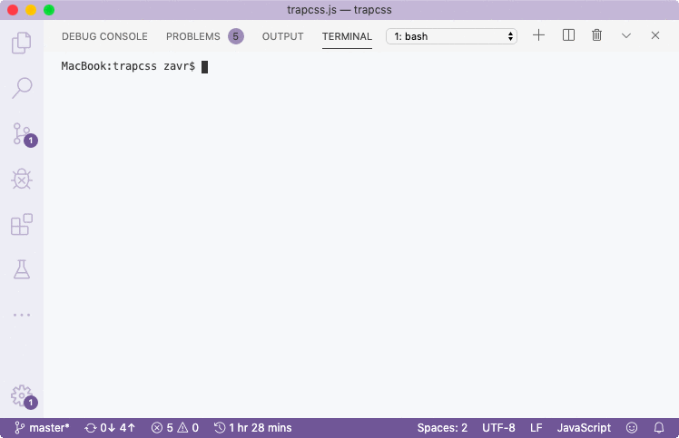

_Depack_ will discover all built-in Node modules, add apply externs for those. Global and Buffer externs are always added (even if _Buffer_ isn't used). You might see a message _"Skipping package usually that imports itself in node_modules/usually/src/index.js"_, because `usually` has an example usage where in its JSDoc it gives a snippet with an import: ````js /** * Generate a usage string. * @param {!_usually.Config} config The configuration object. * @example ``` import usually from 'usually' const res = usually({ description: 'A test command-line application', }) ``` */ export default function usually(config = { usage: {} }) { ```` Static analysis is based on regexes, so if you ever encounter any problems with it, e.g., false positive imports detection where your imports are just placed in a string, for example, you should break up the import so it becomes undetectable: ```js // false positive const myString = `// auto-generated code import package from 'package' ` // becomes const myString = `// auto-generated code i` + `mport package from 'package' ` ``` I know it's not perfect, but I'd rather keep simple regexes for the analysis of ECMA modules, instead of increasing complexity by building of ASTs _etc_. The whole purpose of _NodeTools_ is to be really simple yet effective. The result of compilation is saved into the `compile/bin/trapcss.js`, and the file is assigned executable rights so that it can be called from shell, as it has got the shebang with the ``node`` env. ```js #!/usr/bin/env node 'use strict'; const fs = require('fs'); function q(){var a={description:"Remove unused CSS",example:"trapcss index.html example.html -c style.css -o style-dropped.css",line:"trapcss input.html[,n.html,...] -c style.css [-o output] [-hv]",usage:v()};const {usage:b={},description:c,line:d,example:f}=a;a=Object.keys(b);const g=Object.values(b),[e]=a.reduce(([h=0,m=0],p)=>{const t=b[p].split("\n").reduce((r,n)=>n.length>r?n.length:r,0);t>m&&(m=t);p.length>h&&(h=p.length);return[h,m]},[]),k=(h,m)=>{m=" ".repeat(m-h.length);return`${h}${m}`}; a=a.reduce((h,m,p)=>{p=g[p].split("\n");m=k(m,e);const [t,...r]=p;m=`${m}\t${t}`;const n=k("",e);p=r.map(u=>`${n}\t${u}`);return[...h,m,...p]},[]).map(h=>`\t${h}`);const l=[c,` ${d||""}`].filter(h=>h?h.trim():h).join("\n\n");a=`${l?`${l}\n`:""} ${a.join("\n")} `;return f?`${a} Example: ${f} `:a};const w=(a,b,c,d=!1,f=!1)=>{const g=c?new RegExp(`^-(${c}|-${b})$`):new RegExp(`^--${b}$`);b=a.findIndex(e=>g.test(e));if(-1==b)return{argv:a};if(d)return{value:!0,index:b,length:1};d=a[b+1];if(!d||"string"==typeof d&&d.startsWith("--"))return{argv:a};f&&(d=parseInt(d,10));return{value:d,index:b,length:2}},x=a=>{const b=[];for(let c=0;c